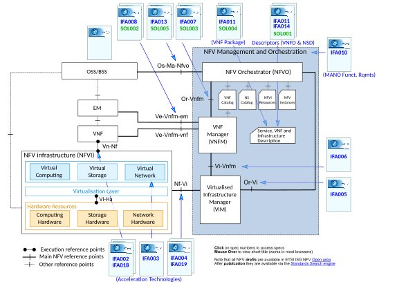

1. O que é NFV
Com o gradativo aumento das redes de comunicação, tornou-se cada vez mais necessária a adoção de medidas para diminuição de custos
de equipamento e manutenção. Dentre as soluções propostas ao problema tem-se a Virtualização das Funções de Rede (NFV - Network Function Virtualization), que sugere a criação de softwares que substituam os equipamentos de funções de rede. Tais hardwares virtualizados (como de criptografia, DNS, Firewalls, dentre outros) se encontram na nuvem em máquinas virtuais, que ao contrário dos equipamentos que eles substituem, são relativamente mais baratos e de fácil manuseio, por de serem constituídos apenas de switches, bancos de dados e servidores. Além disso, o NFV facilita a expansão da rede, pois a cada upgrade ou adição de funcionalidades de uma operadora, os processos de instalação e manutenção eram demorados, além de serem limitados a um espaço físico, tendo em vista o tamanho dos equipamentos.
1.1 Arquitetura

- NFVI (Infraestrutura de NFV): Provê os recursos necessários para a execução das VNFs, usando o hardware presente no cluster de computadores (Processadores, RAM, Discos e Interfaces de Rede) e uma camada de Virtualização para criar os correspondentes componentes virtualizados.
- VNFs: São a unidade central de trabalho de um sistema NFV; é a implementação virtualizada de uma função de rede que pode ser executada numa NFVI. Elas podem, em teoria, executar qualquer função previamente gerenciada por hardware específico na rede, como por ex.: roteadores, switches e firewalls.
- EM: Geralmente acompanham as VNFs, gerenciando as funções da VNF (FCAPS: Fault, Configuration, Accounting, Performance and Security).
- NFV M&O (Orquestrador e Gerenciador de NFV): É o módulo que gerencia e orquestra os recursos usados num sistema NFV através do submódulo VIM (Virtualized Infrastructure Manager) e também os próprios serviços de rede oferecidos pelas VNFs, por meio do submódulo VNFM (VNF Manager).
1.2 Requisitos
- Tecnologias da Computação em Nuvem: A implantação de um sistema NFV só é plausível graças aos equipamentos de alta
qualidade que vieram junto com a Computação de Nuvem. Dentre eles temos switches Ethernet para possibilitar o tráfego de informação entre máquinas virtuais e interfaces físicas; processamento de pacotes de alto-desempenho, possível graças a CPUs de alta velocidade e de múltiplos cores somados à bandas de comunicação com alta taxa de transmissão.
Além disso, a Computação em Nuvem contribui com métodos de otimização de recursos computacionais, que conseguem associar aplicações virtuais diretamente aos núcleos de CPU, memórias e interfaces corretas, além da reinicialização de máquinas virtuais defeituosas.
Por fim, a existência de APIs para controle de informações como o OpenFlow, OpenStack e o OpenNaaS, adicionam mais um grau de integração de tecnologias NFV. - Servidores de Alta Capacidade: A fim de suportar a grande quantidade de funções e clientes numa mesma rede, é preciso que estejam disponíveis servidores de alta qualidade, que além de conseguirem aguentar a carga do sistema, devem possuir componentes de padrão da indústria de mais alto nível, como por exemplo a arquitetura x86.